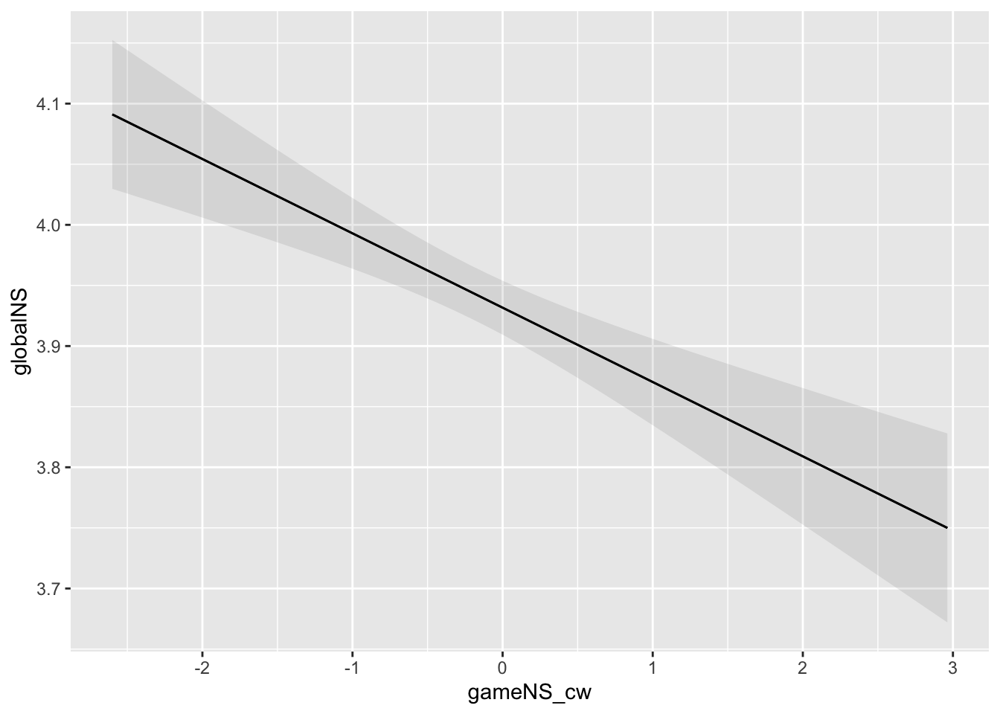
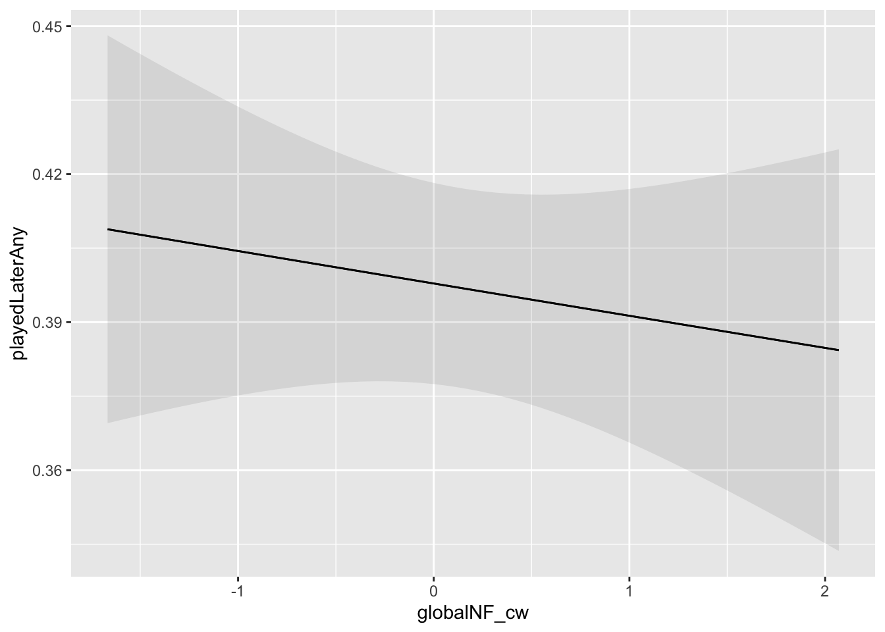
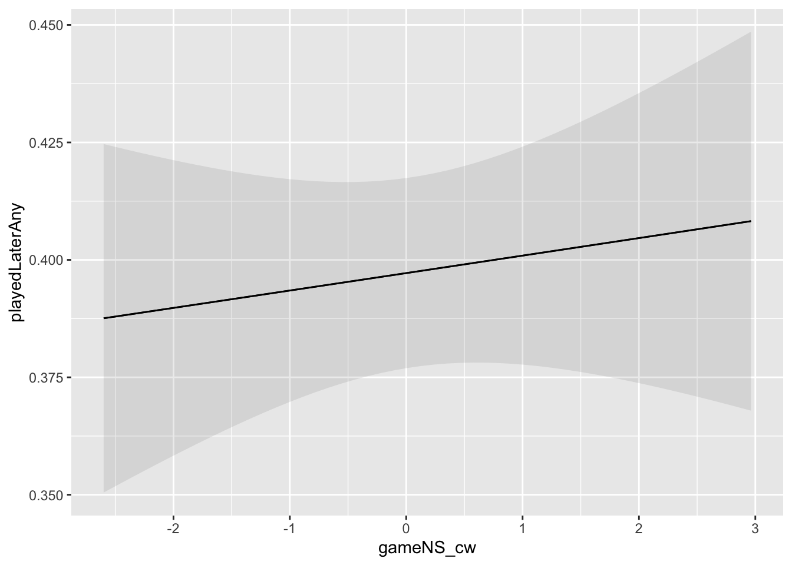

Show the code (libraries)
if (!require("pacman")) install.packages("pacman")
library(pacman)
p_load(tidyverse, lme4, marginaleffects, glmmTMB, mice)if (!require("pacman")) install.packages("pacman")
library(pacman)
p_load(tidyverse, lme4, marginaleffects, glmmTMB, mice)diary <- read_csv("data-synthetic/synDiaryClean.csv.gz") # requires that the preprocessing script has been run
intake <- read_csv("data-synthetic/synIntake.csv.gz")
nin <- read_csv("data-synthetic/synNintendo.csv.gz")
xbox <- read_csv("data-synthetic/synXbox.csv.gz")
steam <- read_csv("data-synthetic/synXbox.csv.gz")dat <- diary |>
left_join(intake |> select(pid, age, gender, eduLevel, employment),
by = "pid"
) |>
mutate(pid = as.character(pid)) |>
# this is needed otherwise nlme and marginaleffects don't play nicely
mutate(
gender = factor(gender),
eduLevel = factor(eduLevel),
employment = factor(employment),
day = factor(day)
)There’s a flukey result here wherein gameNS_cw and globalNS are negatively related, even though these variables have nothing to do with each other in the sim. We weren’t able to diagnose yet whether this is simulation problem or a bug elsewhere, but will continue investigating prior to the collection of human data and update accordingly.
Experiences of gaming feed into and co-constitute experiences of life as a whole—experiences with games are one (greater or lesser) element of lives in general. Thus, H6 in BANG predicts: Greater in-game need satisfaction is associated with greater global need satisfaction.
We model this with a multilevel within-between linear regression whereby game-level need satisfaction (within- and between-centered; gameNS_cw and gameNS_cb) predicts deviation from a person’s typical globalNS (globalNS, with a random intercept and slope), and an AR(1) autocorrelation term.
h1mod <- glmmTMB(globalNS ~ gameNS_cw + gameNS_cb + (1 + gameNS_cw | pid) + ar1(day + 0 | pid),
data = dat
)
plot_predictions(h1mod, condition = "gameNS_cw", vcov = TRUE)
Experiences of need satisfaction during a particular gaming session lead players to update expectations for future experiences with the current game, similar games, and gaming as a whole, such that greater need satisfaction leads to higher expectations for future need satisfaction. Under BANG, need-related outcome expectations are conceptually similar to intrinsic motivation, and the behavioral product of these expectations is therefore greater behavioral engagement.
Thus, the model attempts to evaluate whether experiencing high game-level need satisfaction in one’s most recent session is linked with a higher likelihood of playing games again in the 24-hour period after the survey.
Another factor that might increase the likelihood that someone (re)turns to gaming is global need frustration. SDT predicts that (global) need frustration results in compensatory behavior—people attempt to replenish needs that are not being met by altering their behavior. The dense need satisfaction offered by games constitute one way for people to compensate. BANG operationalizes this compensatory play in via intrinsic motivation. Frustrated needs in one’s life in general make opportunities to fulfill those needs more salient, which—all else equal—manifests phenomenologically as an increased energy towards those activities. Given this, we predict: Global need frustration is associated with higher likelihood of playing in the 24-hour period after survey completion (H9 in BANG)
As they share an outcome variable, we model these together. We model these with a multilevel within-between logistic regression, where in-game need satisfaction and global need frustration (each within- and between-person centered; gameNS_cw, gameNS_cb, globalNF_cw, globalNF_cb) predict playedAfterSurvey, a binary variable indicating whether any play happened in the 24-hour period after diary survey completion.
As before, we include an AR(1) term to account for the fact that likelihood of play might be autocorrelated (if, e.g., people tend to get on a role and play multiple days in a row).
h2mod <- glmmTMB(
playedLaterAny ~ gameNS_cw + gameNS_cb + globalNF_cw + globalNF_cb +
(1 + gameNS_cw + globalNF_cw | pid) + ar1(day + 0 | pid),
data = dat,
family = binomial(link = "logit"),
dispformula = ~1,
ziformula = ~0
)
plot_predictions(h2mod, condition = "globalNF_cw", vcov = TRUE)
plot_predictions(h2mod, condition = "gameNS_cw", vcov = TRUE)